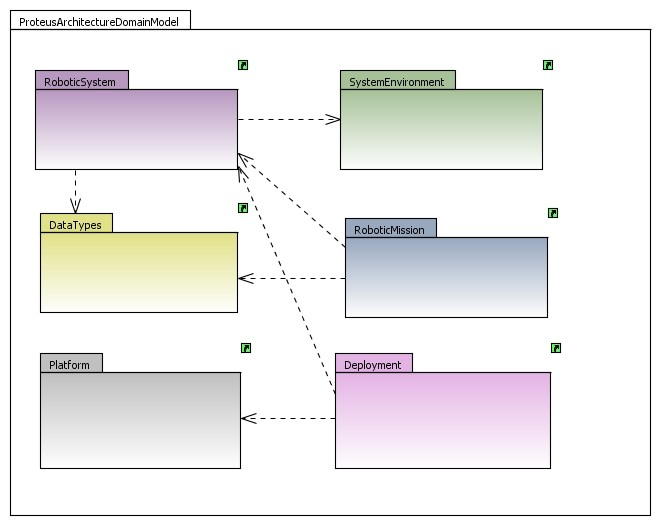
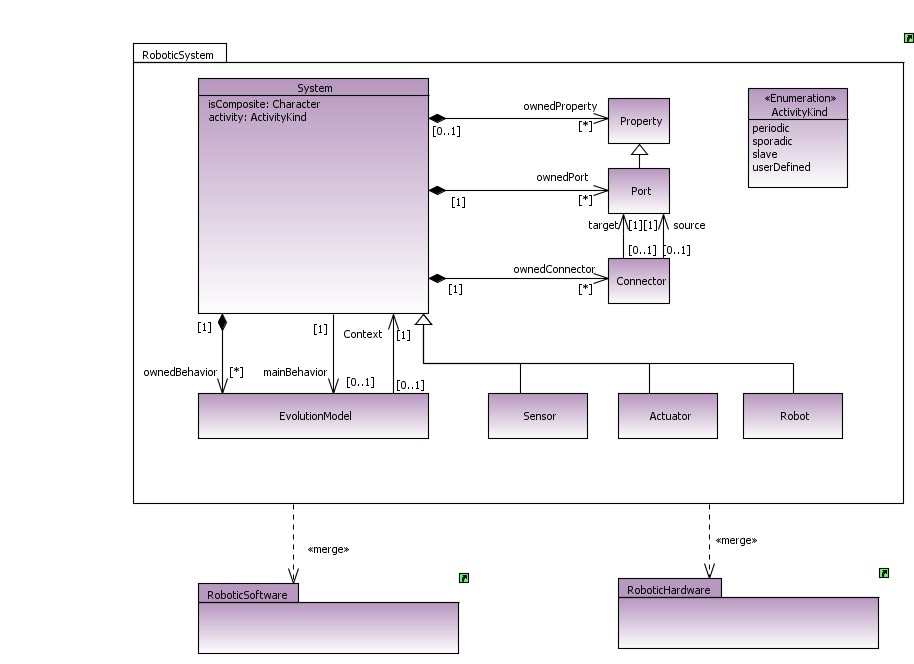
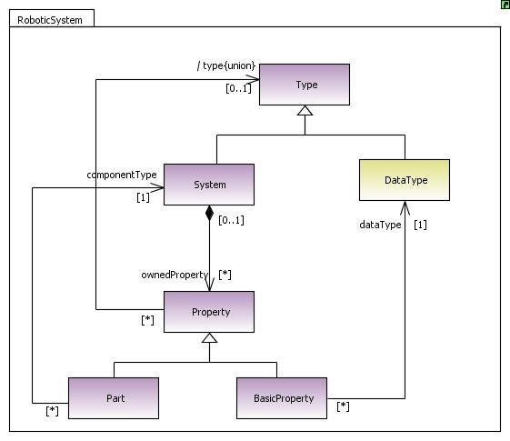
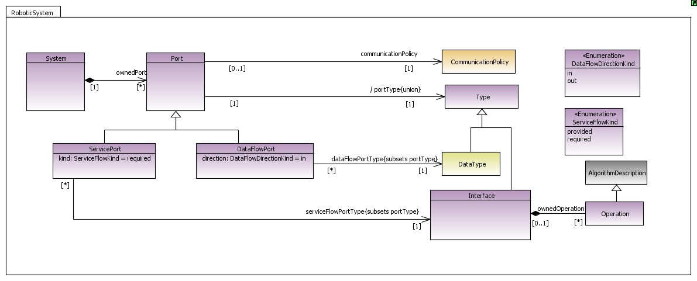
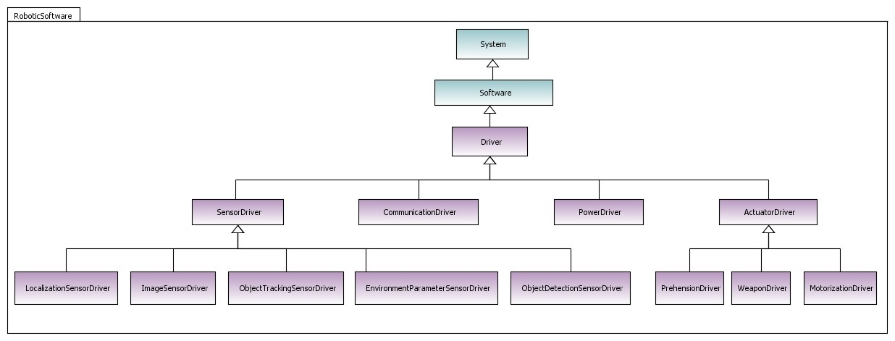
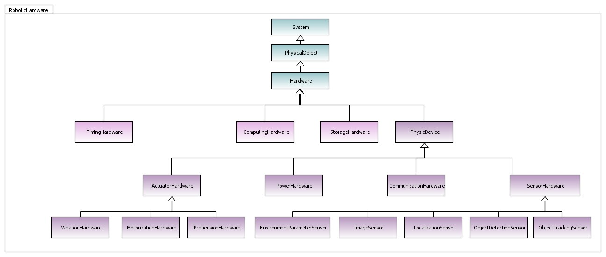

Modeller¶
Meta modelling¶
About Papyrus¶
Papyrus is aiming at providing an integrated and user-consumable environment for editing any kind of EMF model and particularly supporting UML and related modeling languages such as SysML and MARTE. Papyrus provides diagram editors for EMF-based modeling languages amongst them UML 2 and SysML and the glue required for integrating these editors (GMF-based or not) with other MBD and MDSD tools.
Papyrus provides a very advanced support for UML profiles enabling support for “pure” DSL. Every part of Papyrus may be customized: model explorer, diagram editors, property editors, etc.
See also
Papyrus tutorials¶
Go to Papyrus tutorials page.
DSL detailed¶
One of the objectives of the PROTEUS project is to provide domain specific languages (and related tools like editors, consistency checkers, etc) suitable to specify missions, environments and robot behaviours that have been specified by robotics experts involved in the project. The discussions within the PROTEUS project have led to the decision of defining three DSL s.
1 The Architecture DSL which will ease the definition of specific robotic architectures (reactive, deliberative, hybrid) and specific components that form those architectures (sensors, actuators, planners).
2 The “Control & Communication DSL” that will control the robotic components and will ease the definition of communication mechanisms between components (sending/receiving of events and data).
3 The “Algorithms DSL” that will ease the definition of algorithms which are to be used, triggered with the “Control & Communication DSL” for implementing behaviours in the different components of an architecture described with the Architecture DSL.
Domain model¶
The domain model of a given domain specific language defines the concepts and the terminology of the language domain. The relationships between the concepts are described as well. In this section, we present the domain model of the RobotML DSL s based on the requirements defined in the previous section and on the knowledge base provided by the ontology. We have used UML class diagrams to represent the domain model. Figure 1 show a generic view of the RobotML domain model which describe the architecture of the robotic system (ie. its internal structure), the behavior of components (through FSMs or algorithms) , the communications between them and the deployment of robotic systems to specific robotic platforms.
Architecture DSL¶
This section introduces a high-level “executive” summary of the subject matter of the relevant sub- package. It contains an informal and lightweight description that identifies the subject matter itself (key concepts and relationships), the general principles of operation (semantics), design rationale, relationship to other packages and their subject matter, etc. The idea is that, for a cursory reader, this should provide sufficient information of the subject without delving into technical details.
The Proteus architecture domain model package contains six sub-packages:
- The robotic system package: describes the concepts that help defining and composing a robotic system,
- The system environment package: since we not only model the robotic system but also its environment (for example for simulation purpose), this package defines the concepts composing the “real” environment where robots evolve,
- The data types package: defines the data items that will necessarily be exchanged between robotic components, between algorithms, etc,
- The robotic mission package: describes the concepts that are needed to define an operational mission and which are used by the components of an architecture performing it, The deployment package: specifies a set of constructs that can be used to define the execution architecture of robotic systems,
- The platform package: defines the concept of platform which represents a software,
- Execution environment that can be either a robotic simulator or a robotic middleware.
Domain model detailed¶
Robotic System Package¶
A robotic System is composed of Systems that communicate with other Systems through Ports and have specific Evolution Models (i.e. behaviours). Systems could be Software or Hardware. Software systems are detailed in the RoboticSoftware package (Figure 6), Hardware Systems are detailed in the RobThe environment is the highest possible “container” for the physical objects to exist, and it is considered as part of the architecture of a robotic system. Figure 8 shows the robotic environment package which enables the specification of different types of environments. oticHardware package (Figure 7).
The System concept corresponds to the component concept. The term system is more appropriate to describe a robotic component, this is due to the fact that the term system is more meaningful for a robotician than the term component. A System is composed of properties, ports and connectors.
Figure 4 shows the details of the concept of property. A system is composed of properties which can be a subsystem or a variable. The Part property is typed by a system and thus corresponds to a subsystem. The BasicProperty is typed by a data type and thus corresponds to a variable.
Figure 5 Shows the details of the concept of port. A port formalizes an interaction point of a system. It is a special kind of properties that has a type and a communication policy. A ServicePort is a port that is specific to client/server communications. DataFlowPorts enable data flow-oriented communication between systems, where messages that flow across ports represent data items. ServicePorts support a request/reply communication paradigm (also called client/server model of communication), where messages that flow across ports represent operation calls. ServicePorts are typed by an interface which specifies a number of operations without stating how exactly they are implemented.
Detail of the robotic software package:
Figure 6 shows the details of the robotic software package. A software could be a driver which is the software system part of a DeviceSystem.
Details of the robotic hardware package:
Figure 7 shows the details of the robotic hardware package. A hardware could be: • a physic device: represents the hardware part of a device system, • a storage hardware: represents different forms of memory, • a computing hardware: represents physical processing devices capable of storing and executing program code, • a timing hardware: represents a hardware entity that is capable of following and evidencing the pace of time.
Robotic environment package¶
The environment is the highest possible “container” for the physical objects to exist, and it is considered as part of the architecture of a robotic system. Figure 8 shows the robotic environment package which enables the specification of different types of environments.

Installation¶
You need to download the Eclipse Modelling tools. Then extract the modeller on your computer and launch it. You need to install Papyrus, with RobotML extra feature, Acceleo, and Subclipse.
- To install Acceleo, clic on Help/install Modellign component, and selection Acceleo.
- To install Papyrus and Subclipse, clic on Help/Install new software..., and add the following update site
Juno version¶
| Plugin name | update site |
|---|---|
| Papyrus | http://download.eclipse.org/modeling/mdt/papyrus/updates/releases/juno |
| Subclipse | http://subclipse.tigris.org/update_1.10.x |
Note
The juno version not support the dynamic validation.
Kepler version¶
| Plugin name | update site |
|---|---|
| Papyrus (nigthly) | http://download.eclipse.org/modeling/mdt/papyrus/updates/nightly/kepler |
| Subclipse | http://subclipse.tigris.org/update_1.10.x |